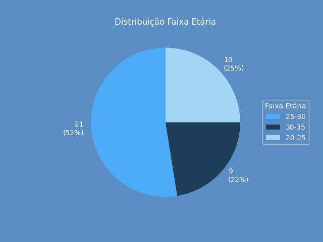
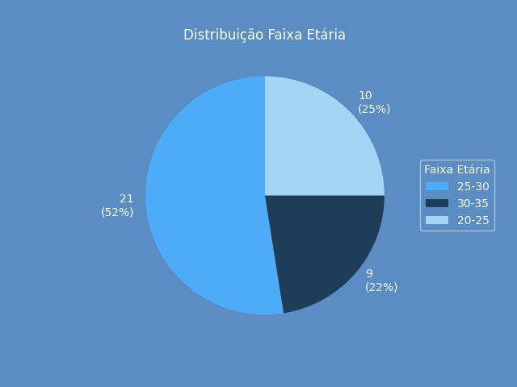

Introdução
Nos últimos anos, o interesse por investimentos tem crescido significativamente,
impulsionado pelo fácil acesso à informação e ao mercado financeiro por meio de
plataformas digitais.
No entanto, investidores iniciantes frequentemente enfrentam
desafios ao gerenciar seus recursos de forma eficiente, devido à falta de
conhecimento técnico , à dificuldade em planejar investimentos e à ausência de
ferramentas acessíveis que facilitem a tomada de decisão.
A sociedade impactada por esse problema é composta por indivíduos que estão dando os primeiros passos no mundo dos investimentos. Geralmente, são pessoas que buscam aumentar seu patrimônio, mas que possuem pouca ou nenhuma experiência no mercado financeiro.
Esse grupo inclui jovens adultos iniciando sua vida financeira, trabalhadores que desejam fazer seu dinheiro render mais e até mesmo aposentados que querem investir suas economias de forma segura. No entanto, a falta de um planejamento estruturado pode levar a decisões impulsivas, exposição a riscos desnecessários e dificuldades em atingir metas financeiras.
Considerando esse cenário, o projeto desenvolvido visa criar um aplicativo para investidores iniciantes, na intenção de orientar pessoas sem experiência nenhuma ou que ainda estão iniciando na área de investimento, permitindo com que o dinheiro investido seja bem direcionado considerando suas necessidades, objetivos e situação de modo particular
Metodologia
Fonte de Dados
O projeto foi baseado em dados coletados em arquivos .csv disponibilizados de maneira pública no site Kaggle, uma plataforma comunitária on-line para cientistas de dados entusiastas do aprendizado de máquina. O Kaggle permite que os usuários colaborem com outros usuários, encontrem e publiquem conjuntos de dados, entre outras funcionalidades.
O primeiro arquivo csv utilizado em 2 das 3 analises que serão apresentadas posteriormente se trata do "startup_growth_investment_data", que contem informações referente aos investimentos realizados em startups de diversos segmentos e multiplos paises.
O segundo arquivo csv utilizado se trata do "Original_data", um arquivo onde um grupo de pessoas foram entrevistadas sobre os seus investimentos realizados, tal como sua fonte de informações e outros detalhes.
Ferramentas Utilizadas
A linguagem escolhida para a analise dos dois datasets utilizado foi o python, em decorrência da facilidade de sua escrita e bibliotecas especializada a tarefa de analise de dados, como pandas(Manipulação de DataFrame), matplotlib e seaborn(Ambas para a construção e estilização de gráficos)
Para demonstraçao dos resultados utilizados, foi construído uma pagina simples em HTML e hospedada através do GitHub Pages.
Análise
Analise de Startup por Segmento Principal
Internacional


- O domínio do E-commerce pode ser explicado pelo crescimento exponencial das compras online, impulsionado principalmente pela pandemia e pela digitalização global do varejo.
- HealthTech e SaaS (Software as a Service) também se destacam devido à alta demanda por soluções tecnológicas na saúde e automação de processos empresariais.
- Biotech, embora importante, tem um ciclo de desenvolvimento mais longo e exige mais investimento em pesquisa, o que pode justificar seu valor estimado menor em comparação.
- Há picos notáveis por volta de 2015 a 2019 que coincidem com períodos de inovação tecnológica intensa e o boom de startups unicórnios.
- A queda observada em 2020 pode estar relacionada à incerteza econômica provocada pela pandemia de COVID-19, onde muitos investidores reduziram o risco.
- A recuperação posterior demonstra a resiliência do ecossistema de startups e a retomada da confiança dos investidores, especialmente em setores como saúde, logística e tecnologia.
- A dominância de HealthTech pode refletir a atenção crescente a soluções de saúde, telemedicina e wearables.
- SaaS se destaca por seu modelo de negócio escalável e por atender empresas de todos os portes.
- A menor participação da Biotech está alinhada com seu desenvolvimento mais técnico, caro e regulado, o que reduz o número de players no mercado.
- O alto investimento em HealthTech mostra que, além de haver muitas startups, elas também recebem grandes aportes individuais, o que é típico em áreas com alto impacto social e potencial de crescimento.
- E-commerce permanece forte pelo seu alcance global e rápida escalabilidade.
- O investimento relativamente baixo em Biotech, mesmo com grande potencial, é reflexo do alto risco e longo retorno do setor, o que exige investidores especializados.
Valor Total Estimado Por Segmento
Total de Investimento em Startups por Ano
Quantidade de Startup por Segmento
Valor Investido Total por Segmento
Nacional

- O segmento Blockchain lidera em valor estimado, com cerca de US$ 0.64 trilhões, seguido de SaaS (0.56T), EdTech (0.54T) e AI (0.52T). Setores como Fintech, HealthTech e E-commerce aparecem nas últimas posições, com valores entre US$ 0.47T e 0.50T.
- O Brasil apresenta um cenário onde segmentos mais especulativos (como Blockchain e AI) têm maior valor estimado, enquanto setores com demanda consolidada e impacto direto na economia real (como E-commerce e HealthTech) têm menor representatividade.
- Indica menor maturidade dos mercados consumidor e investidor, que priorizam inovação disruptiva sem um histórico comprovado de retorno e sobreavaliação de tecnologias emergentes no Brasil;
- Volatilidade evidente no volume de investimentos, oscilando entre US$ 0.043T e US$ 0.08T, apresentando ausência de tendência clara de crescimento ao longo do tempo.
- A ausência de tendência de crescimento pode ser resultado da falta de confiança dos investidores no cenario nacional, baixo número de unicórnios que atraiam grandes aportes ou fuga de cérebros ou startups brasileiras buscando captação fora.
- Os segmentos com o maior número de startup nacionais são Blockchain (82), SaaS (69), AI (65), enquanto intercionalmente são os segmentos de HealthTech (685), SaaS (643), E-commerce (633)
- O Brasil apresentada baixa densidade de startup se comparado ao cenário nacional, 520 startup nacionais para 5000 startup internacionais, praticamente 10% do cenário internacional
- Baixa densidade de startups no Brasil pode ser resultado de menor acesso a capital semente, barreiras burocráticas à abertura de empresas e cultura empreendedora ainda em crescimento.
- A concentração brasileira em Blockchain e AI, apesar de seu risco elevado e longo ciclo de retorno, sugere baixo alinhamento com demandas reais do mercado e influência de modismos tecnológicos, possivelmente com baixa retenção de valor a longo prazo
- O investidor nacional pode encontrar oportunidades negligenciadas em setores como E-commerce e HealthTech, ainda pouco explorados no Brasil mas com histórico consolidado globalmente.
- Os segmentos com maior valor investido no cenário nacional são Blockchain (US$ 0.22T, 16.83%), SaaS (13.44%), EdTech (12.16%), apresentando uma falta de alinhamento com o cenário internacional
- No Brasil, a liderança de Blockchain novamente indica uma visão otimista de longo prazo, mas potencialmente desalinhada com retorno imediato.
- Empreendedores brasileiros devem observar o comportamento de investidores internacionais e adaptar modelos de negócio em setores como saúde, varejo digital e SaaS.
Valor Total Estimado Por Segmento
Total de Investimento em Startups por Ano
Quantidade de Startup por Segmento
Valor Investido Total por Segmento
Analise de Startup por Segmento Complementar
Internacional


- O segmento Tech lidera a geração de receita com US$ 262 bilhões, seguido por Logistics (US$ 256B), AI (US$ 252B) e Gaming (US$ 251B)
- Setores tradicionais em tecnologia e inovação (como Tech e AI) continuam sendo os maiores atratores de receita, evidenciando seu papel estratégico em economias desenvolvidas.
- Logística aparece como destaque com alta receita, refletindo o crescimento do e-commerce e as demandas por eficiência na cadeia de suprimentos global — especialmente após a pandemia.
- A diferença entre o primeiro e o último segmento é pequena (~US$ 28B), o que indica uma distribuição relativamente equilibrada de oportunidades em setores variados, um bom indicativo para diversificação de investimentos.
- AI (2.593 funcionários) e Tech (2.577) lideram em número médio de empregados por startup, acima da média geral de 2.483 funcionários.
- Healthcare com baixa média pode indicar startups mais especializadas, ou que operam em nichos bem definidos com estruturas enxutas.
- Gaming e FoodTech também possuem médias elevadas, sugerindo a complexidade operacional e a necessidade de equipes multidisciplinares (design, engenharia, marketing).
- O pequeno desvio entre os setores (cerca de 200 colaboradores) pode indicar padronização de operações em startups maduras e certa convergência nas práticas de gestão de pessoal.
- Seed e Series A concentram a maior parte das startups na maioria dos segmentos — sinalizando etapas iniciais de desenvolvimento e validação de produto/mercado.
- Tech, Energy e Logistics são os segmentos com maior número de startups no estágio IPO, o que reflete maior maturidade do ecossistema, ideal para investidores mais conservadores
- FinTech e Gaming possuem número expressivo de startups nos estágios Series B e C, o que aponta forte potencial de escalabilidade, opções de investimentos mais arriscadas, mas com maior potencial de retorno
Soma da Receita Anual por Segmento
Média de Funcionários de Startup por Segmento
Quantidade de Startups por Estágio de Investimento em Cada Setor
Nacional

- O setor de IA (Inteligência Artificial) lidera com 30 bilhões de dólares, seguido de perto por Healthcare (29B) e Energy (27B).
- IA e Healthcare têm grande destaque no Brasil, indicando investimento crescente em tecnologia de ponta e saúde — áreas com alto impacto social e inovação .
- O setor de Tech tradicional está relativamente abaixo, o que pode indicar dispersão de capital para setores mais específicos (como IA e FinTech).
- O setor de EdTech tem baixa receita, possivelmente devido à adoção mais lenta de tecnologia na educação pública e privada.
- Os segmentos de AI, Healthcare e Energy são os únicos que se aproximam do padrão internacional em termos de receita, enquanto Tech tradicional e EdTech têm um enorme vão, indicando oportunidades de expansão ou desafios locais.
- Logistics (2.748 funcionários) e AI (2.526) lideram em número médio de empregados por startup, enquanto EdTech (1.949) e FinTech (2.086) estão no final do ranking.
- Startups de logística exigem grandes equipes operacionais e distribuição, o que justifica sua posição, enquanto EdTech e FinTech, com produtos altamente digitais e escaláveis, conseguem operar com equipes menores.
- O alto número médio de funcionários em IA reforça a complexidade técnica e multidisciplinar dessas startups.
- A média de funcionários nas startups brasileiras tende a ser levemente inferior, exceto no setor de logística, refletindo uma menor escala operacional, mas com exceções ligadas à realidade local (como infraestrutura logística mais deficiente, exigindo mais pessoal).
- Todos os segmentos têm distribuição razoavelmente balanceada entre Seed, Series A, B e C, além de IPOs.
- AI e E-commerce têm mais startups em IPO, mostrando maior maturidade, enquanto FinTech e Logistics têm mais startups em fase Seed, indicando presença de startups ainda em estágio inicial.
- AI é destaque tanto em receita quanto em maturidade (muitos IPOs), indicando forte desenvolvimento e atratividade para investidores.
- FinTech no Brasil ainda está em desenvolvimento em comparação com o exterior, com predominância no estágio Seed
- EdTech tem poucos IPOs e alta proporção em Series C, indicando crescimento lento.
- O cenário brasileiro está em estágio anterior de maturidade. A maioria das startups ainda está em fase de crescimento e validação de modelo de negócio, enquanto no exterior muitas já atingiram o nível de IPO.
Soma da Receita Anual por Segmento
Média de Funcionários de Startup por Segmento
Quantidade de Startups por Estágio de Investimento em Cada Setor
Analise de Startup por Pais Principal


- A Alemanha lidera com uma média superior a 105%, o que indica um ecossistema robusto, infraestrutura sólida e forte apoio governamental à inovação.
- O destaque do Brasil é positivo e mostra o avanço dos mercados emergentes na criação de ambientes favoráveis à inovação, mesmo com desafios estruturais.
- Países como Singapura e Reino Unido, embora com histórico de desenvolvimento tecnológico, aparecem com crescimento mais modesto, talvez indicando uma saturação ou estabilidade em seus mercados.
- A Austrália, liderando o ranking, demonstra um ecossistema de investimento muito ativo, possivelmente impulsionado por políticas públicas de incentivo e capital de risco regional.
- O alto número de investidores no Reino Unido e nos EUA reflete a maturidade e atratividade desses mercados para o capital de risco.
- Países emergentes como Índia e Brasil mostram volumes significativos, mas ainda distantes dos líderes, sinalizando espaço para crescimento no setor de investimentos em startups.
- A variação pode estar associada a fatores econômicos globais, como crises financeiras (ex: 2008), políticas de incentivo à inovação, ou até eventos globais como a pandemia de COVID-19.
- O pico em 2020, por exemplo, pode ter sido impulsionado por uma nova onda de soluções digitais criadas em resposta às necessidades da pandemia.
- A queda em 2023 pode indicar maturação de mercado, maior seletividade dos investidores ou retração econômica global.
- A distribuição relativamente equilibrada dos investimentos mostra uma globalização do capital de risco, com aportes consistentes tanto em países desenvolvidos quanto emergentes.
- A França no topo pode refletir sua estratégia nacional de apoio à inovação e tecnologia (como o programa “La French Tech”).
- O Brasil, apesar de sua posição no meio da tabela, confirma seu papel relevante como destino de capital para startups na América Latina.
Média de Crescimento por País
Total de Investidores por País
Evolução Anual da Fundação de Startups
Maiores Investimentos por País
Analise de Startup por Pais Complementar
- Segmentos relacionados de modo geral a tecnologia(Tech e Edtech) possuem uma forte representativiade em paises desenvolvidos e com um mercado de investimento sólido, como França e Alemanha
- Os paises apresentam um foco geral no segmento de saúde(Healthcare), presente também em mercados maduros como o da França, EUA e China.
- Brasil tem uma forte presença em Energy (56) e Gaming (61), sugerindo oportunidades e inovação nesses setores, ao contrário da tendência internacional
- Alemanha e França mostram equilíbrio, com Series C e IPO em destaque, indicando empresas bem estruturadas e maduras
- Brasil e Japão se destacam em Series A e Seed, com menos startups em IPO, o que evidencia um ecossistema em crescimento, mas com baixa taxa de maturação.
- EUA,Canadá e China têm números altos em Series B/C, refletindo robustez e capacidade de escalar startups, também evidenciando um estágio avançado de desenvolvimento.
- Países como Alemanha, EUA e França lideram nos estágios mais avançados (IPO e Series C), mostrando maior maturidade do ecossistema. Brasil, Japão e Índia concentram-se em estágios médios (Seed/Series A), com espaço para crescimento e escalabilidade.
- França (5.13) e EUA (5.12) lideram em avaliação de sucesso, demonstrando ambientes altamente favoráveis para startups.
- Brasil (4.61) apresenta o menor índice, evidenciando desafios em alcançar performance e sucesso sustentáveis.
- Alemanha (4.85) e Japão (4.91) têm avaliações abaixo da média, indicando possíveis gargalos no ambiente de negócios ou no suporte à inovação.
- Startups em países com alta avaliação tendem a ter maior acesso a investimento e suporte. O Brasil precisa melhorar sua infraestrutura de inovação e acesso a capital para elevar a taxa de sucesso. Políticas públicas e incentivo à aceleração podem ser caminhos viáveis.
Quantidade de Startups por Segmento em Cada País
Quantidade de Startups por Estágio de Investimento em Cada Setor
Média de Avaliação de Sucesso por País
Analise de Perfil
 



- A maioria dos investidores participantes da pesquisa são do gênero masculino, representando cerca de 62,5% do total. Isso demonstra uma predominância masculina no ambiente de investimentos, embora a presença feminina, com 37,5%, aponte uma crescente inclusão e interesse das mulheres neste setor.
- A faixa etária predominante é de 30 a 35 anos (52%), seguida pela faixa de 25 a 30 anos (25%) e 20 a 25 anos (22%). Esses dados indicam que o público investidor é majoritariamente jovem, o que sugere uma geração mais conectada às finanças e preocupada com o planejamento de longo prazo.
- A principal motivação dos investidores é a apreciação de capital (65%), ou seja, eles buscam valorização patrimonial ao longo do tempo. Em seguida, aparecem o crescimento (27,5%) e a renda (7,5%). Isso mostra um perfil de investidor mais arrojado, com foco em rentabilidade futura em vez de retorno imediato.
- A maioria dos participantes espera retornos na faixa de 20% a 30%, o que confirma uma tendência de expectativas elevadas quanto à performance de seus investimentos. Apenas uma pequena parcela almeja retornos entre 10% e 20% ou acima de 30%, evidenciando uma certa moderação dentro de uma visão majoritariamente otimista.
- As principais fontes de informação dos investidores são os consultores financeiros e os jornais/revistas especializadas, seguidos pela televisão. A internet, curiosamente, aparece com menor relevância, sugerindo que, embora o público seja jovem, ainda há uma valorização de fontes tradicionais e especializadas, talvez em busca de maior credibilidade ou confiabilidade nas decisões.
Distribuição de Gênero
Distribuição Faixa Etária
Objetivo do Investimento
Expectativa de Retorno
Fontes de Informação
Conclusão
A análise dos dados de startups e do perfil dos investidores revela um panorama claro e consistente sobre o ecossistema de inovação e investimento. Os segmentos com maior volume de investimentos — como HealthTech, SaaS e E-commerce — refletem a prioridade do mercado em setores ligados à saúde, tecnologia e digitalização, especialmente após 2010, quando os aportes se tornaram mais consistentes.
A Alemanha destacou-se com a maior média de crescimento percentual entre os países, enquanto a Austrália lidera em número de investidores, indicando um ambiente altamente engajado.
No que diz respeito ao perfil dos investidores, a predominância masculina e a faixa etária entre 25 e 30 anos sugerem um público jovem e ainda marcado por uma participação desigual de gênero. A maioria busca valorização de capital, o que caracteriza um perfil arrojado, com altas expectativas de retorno.
Além disso, nota-se uma forte confiança em fontes tradicionais de informação, como consultores financeiros e publicações impressas, embora isso aponte para oportunidades no fortalecimento de canais digitais confiáveis.
Portanto, o cenário analisado mostra um ecossistema de startups em crescimento, impulsionado por investidores jovens, bem informados e ambiciosos, especialmente voltados a setores estratégicos da economia moderna. Essa sinergia entre inovação e capital cria um terreno fértil para novos negócios, desde que haja equilíbrio entre risco, retorno e acesso à informação de qualidade.